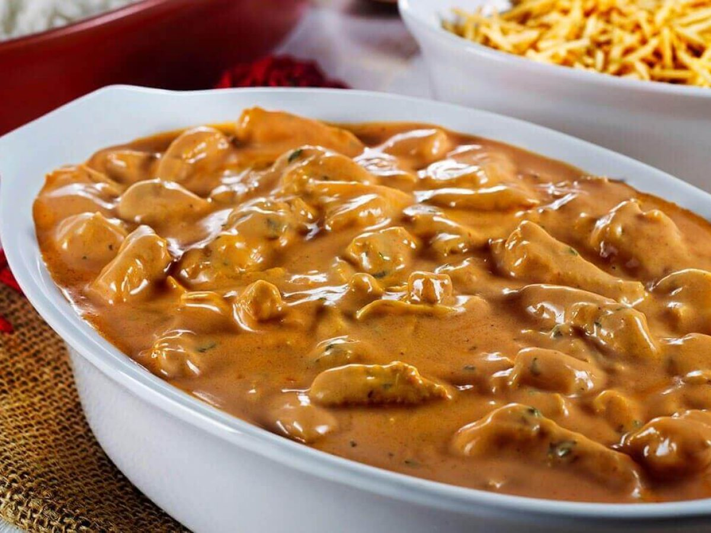

Feijoada

- Feijão
- Linguiça
- Costela
- Bacon
A feijoada é um prato típico da culinária brasileira, geralmente preparada com feijão preto, carne de porco e outros ingredientes como linguiça, bacon, costela, entre outros. O feijão é cozido por horas em uma panela grande.
Feijoada
- Costela Suina
- Alho
- Limão
- Molho barbecue
A feijoada é um prato típico da culinária brasileira, geralmente preparada com feijão preto, carne de porco e outros ingredientes como linguiça, bacon, costela, entre outros. O feijão é cozido por horas em uma panela grande.
Strogonoff de Frango
- Cubos de frango picados
- Molho rosé
- Sal
- Batata palha
A feijoada é um prato típico da culinária brasileira, geralmente preparada com feijão preto, carne de porco e outros ingredientes como linguiça, bacon, costela, entre outros. O feijão é cozido por horas em uma panela grande.
Pizza de Frango
- Massa para Pizza
- Muzzarela
- Frango desfiado
- Catupiry
A feijoada é um prato típico da culinária brasileira, geralmente preparada com feijão preto, carne de porco e outros ingredientes como linguiça, bacon, costela, entre outros. O feijão é cozido por horas em uma panela grande.